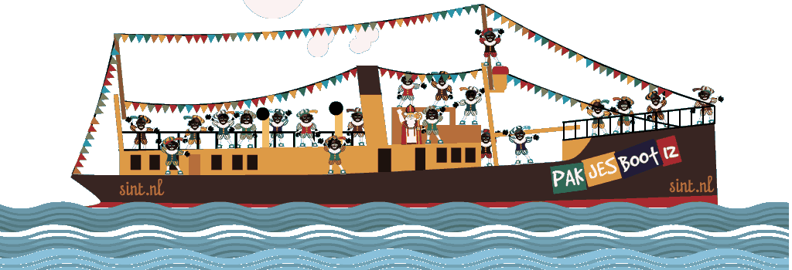

-
Zodra de Sint in ons land is gaat hij rondtoeren. En dat kan best wel vermoeiend zijn, dus slapen doet hij in de vele verschillende Sinterklaashuizen waar je hem altijd kan bezoeken. Maar hij is niet alleen in huizen te vinden, maar ook in shows, dierentuinen, in een circus en… overal eigenlijk wel. Ga hem bezoeken!
-

-
Intochten 2014
Aalsmeer
Aalten
Aardenburg
Abcoude
Aduard
Afferden
Alblasserdam
Alkmaar
Almelo
Almere
Alphen aan den Rijn
Amsterdam
Amsterdam-noord
Amersfoort
Apeldoorn
Arnhem
Assen
Baarn
Bathmen
Bergen op Zoom
Blerick
Breda
Culemborg
Den Bosch
Delft
Den Haag
Deventer
Doetinchem
Eindhoven
Elburg
Emmeloord
Enschede
Genemuiden
Goes
Gouda (NATIONALE INTOCHT)
Haarlem
Harlingen
Hasselt
Heemskerk
Helmond
Hengelo
Kampen
Katwijk a/d rijn
Klimmen
Landsmeer
Leek
Leiden
Leeuwarden
Maassluis
Maastricht
Meppel
Nijmegen
Oosterhout
Oss
Putten
Roeselare (be)
Roosendaal
Rotterdam
Sas van Gent
Sprang-Capelle
Sint-Truiden (be)
Texel
Tilburg
Uithoorn
Utrecht
Veghel
Venlo
Wijchen
Willemstad
Woerden
Wolvega
Zevenbergen
Zierikzee
Zijderveld
Zoetermeer
Zutphen
Zwaanshoek
Staat jouw plaats er niet bij?
Mail het ons! -
Uittochten
-
-
-
Enkhuizen
-